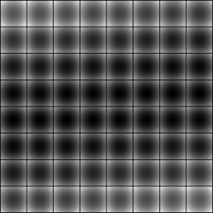
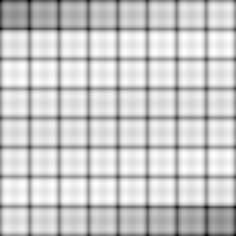
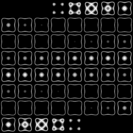
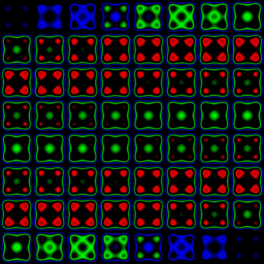

|
|

|
|
|
teem
|
/
|
nrrd
|
Making and Inspecting a Synthetic Dataset
|
This page shows how careful use of unu always one to create
and inspect a non-trivial synthetic volume dataset. Since we don't have
to write any new code, or need any external tools (except perhaps a
text editor), this is a good example of the kind of swiss-army knife that
unu is. Following each command example are some points about
what is going on. Note that in the following "X", "Y", and "Z" are
simply synonyms for "fastest axis", "medium axis", and "slowest axis":
nrrd supplies gives no intrinsic names to the axes.
We start with a 64x64x64 volume (x.nrrd) which varies from -1.3
to 1.3 along the X axis, and is constant along Y and Z:
echo "-1.3 1.3 -1.3 1.3 -1.3 1.3 -1.3 1.3" \
| unu reshape -s 2 2 2 \
| unu resample -s 64 64 64 -k tent -o x.nrrd
- Because nrrd can read plain text data, we can use something
as simple as "echo" to get data into nrrd. The output of
"echo" will actually be a 1-by-8 2-dimensional nrrd.
- "unu reshape" imposes new dimensions on the data, making
it into a 2x2x2 volume. Because this does not change the memory
ordering of the samples, it remains the same as indicated by the
"echo" command.
- "unu resample" upsamples this is 64x64x64 using linear
interpolation ("-k tent").
The synthetic dataset will sample the function
f(x) = x2 + y2 + z2
- x4 - y4 - z4
So we start with squaring the X values in x.nrrd:
unu 2op pow x.nrrd 2 -o xx.nrrd
- unu 2op is a little different from other unu
commands in its avoidance of the "-i" flag. Rather, the
two arguments (and there are always exactly two) come after the
binary operator, which here is "pow".
- This should be read as prefix notation, as in
"pow(x.nrrd,2)", that is, we're raising every value in
in x.nrrd to the power 2.
We need to create similar arrays in which the value varies along
the Y and Z axes (y.nrrd, z.nrrd):
unu swap -i xx.nrrd -a 0 1 -o yy.nrrd
unu swap -i xx.nrrd -a 0 2 -o zz.nrrd
At this point we can add these volumes together to get a dataset
with spherical isosurfaces (sph.nrrd):
unu 2op + xx.nrrd yy.nrrd \
| unu 2op + - zz.nrrd -o sph.nrrd
- Although there is a "unu 3op", currently addition is
not one of the availble ternary operators. so we string together
two "unu 2op" invocations.
- Because "unu 2op" always requires two arguments after
the operator ("+"), we have to identify standard input somehow,
and nrrd follows the unix convention of using "-" for
this. To the uninitiated, "-" might seem to have some arithmetic
significance, but this is not the case.
We can inspect what we have so far, to make sure that the data
looks as we expect. One way of inspecting a volume in one image
is to make a mosaic of its slices:
unu pad -i sph.nrrd -min -1 -1 0 -max M+1 M+1 M -b pad -v 0 \
| unu axsplit -a 2 -s 8 8 \
| unu permute -p 0 2 1 3 \
| unu axmerge -a 0 | unu axmerge -a 1 \
| unu quantize -b 8 -o sph-mos.png
unu resample -i sph-mos.png -s x0.5 x0.5 -k tent -o sph-mos-th.png

- We want a little visual demarcation between the slices, so we
pad with value zero. The "-min" and "-max" flags
result in padding by one sample in X and Y, but not in Z.
- "unu axsplit": A mosaic is a 2-D array of (2-D) images,
so we have to split the Z axis into two axes in order to get a 4-D nrrd.
- "unu permute": We have to mingle the slices axes (0 and 1)
with the newly created mosaic axes (2 and 3). In this case, we could
have also used "unu swap".
- "unu axmerge": Having intermingled the slice and mosaic
axes, we have to re-join them into a two-dimensional image. Conceptually,
the X dimension of the image has a fast dimension which varies within
a slice, and a slow dimension which varies across slices. The Y dimension
is configured similarly.
- "unu resample": This just downsamples the image some
to make the thumb-nail used below. Note that because nrrd can
read and write PNG images, we can go directly from unu to a web page.
The final synthetic volume, "pin.nrrd", also requires raising
the original volume to the 4rth power. All this is done with "unu
2op". We also create a new mosaic of the result:
unu 2op pow xx.nrrd 2 -o xxxx.nrrd
unu 2op pow yy.nrrd 2 -o yyyy.nrrd
unu 2op pow zz.nrrd 2 -o zzzz.nrrd
unu 2op - sph.nrrd xxxx.nrrd \
| unu 2op - - yyyy.nrrd \
| unu 2op - - zzzz.nrrd -o pin.nrrd
unu pad -i pin.nrrd -min -1 -1 0 -max M+1 M+1 M \
| unu axsplit -a 2 -s 8 8 \
| unu permute -p 0 2 1 3 \
| unu axmerge -a 0 | unu axmerge -a 1 \
| unu quantize -b 8 -o pin-mos.png
unu resample -i pin-mos.png -s x0.5 x0.5 -k tent -o pin-mos-th.png

- In "unu 2op", the use of "-" to signify both
subtraction and standard input is a little bizarre looking, but its
an idiom that makes more sense with repeated use.
- The mosaic is created by exact same sequence of steps as before,
although the first step ("unu pad") bleeds out the values
at the boundary, instead of using one specified value (as before).
A more revealing look at the shape of this volume is possible with
what is basically an isocontour extraction. Except that instead of
actually doing an isocontour, we'll just use a transfer function.
We'll seek to emphasize values around 0.0, with a tent-shaped peak.
echo "-1 0 -0.2 0 0.0 1 0.2 0 1 0" \
| unu reshape -s 2 5 -o iso-txf.txt
unu imap -i pin.nrrd -m iso-txf.txt \
| unu pad -min -1 -1 0 -max M+1 M+1 M \
| unu axsplit -a 2 -s 8 8 | unu permute -p 0 2 1 3 \
| unu axmerge -a 0 | unu axmerge -a 1 \
| unu quantize -b 8 -o iso-mos.png
unu resample -i iso-mos.png -s x0.5 x0.5 -k tent -o iso-mos-th.png

- The transfer function "iso-txf.txt" could just have well
been created in a text editor. We're just showing off here.
- "unu imap" performs the mapping of the data values in
"pin.nrrd" through the transfer function in "iso-txf.txt".
"Imap" stands for "irregular map", because the control points
between the linear ramps are irregularly spaced.
This allows us to see the general shape of the volume: a puffy cube with
slightly extended corners, perhaps like a pin-cushion.
More colorful version:
unu imap -i pin.nrrd -m coliso-txf.txt \
| unu pad -min 0 -1 -1 0 -max M M+1 M+1 M \
| unu axsplit -a 3 -s 8 8 | unu permute -p 0 1 3 2 4 \
| unu axmerge -a 1 | unu axmerge -a 2 \
| unu quantize -b 8 -o coliso-mos.png
unu resample -i coliso-mos.png -s = x0.5 x0.5 -k tent -o coliso-mos-th.png

- Because each line of coliso-txf.txt has four lines instead
of the two (in iso-txf.txt), the output of "unu imap"
has three values (instead of one), so the result is a Nrrd of dimension
4 (not 3).
- The "unu pad", "unu axsplit", and all
subsequent commands have to take the extra dimension into account.
This is a consequence of nrrd's "everything is a scalar" mentality:
an 3-D volume of colors is represented as a 4-D volume of scalars.
Finally, we'll modify the sphere dataset sph.nrrd so that its
zero isosurface is at about the same position as that of
pin.nrrd. Considering that the original coordinates were from
-1.3 to 1.3, we'll subtract 1.0 from the the values in sph.nrrd,
over-writing the old volume in the process:
unu 2op - sph.nrrd 1 -o sph.nrrd
At this point we can clean up the little temporary files from
creating sph.nrrd and pin.nrrd:
rm -f x.nrrd {xx,yy,zz}.nrrd {xxxx,yyyy,zzzz}.nrrd
Now we can make a volume renderings of
the sph.nrrd and pin.nrrd volumes.